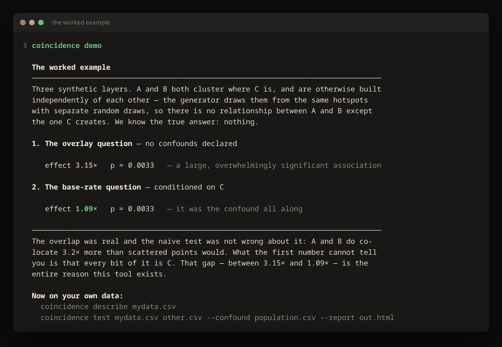
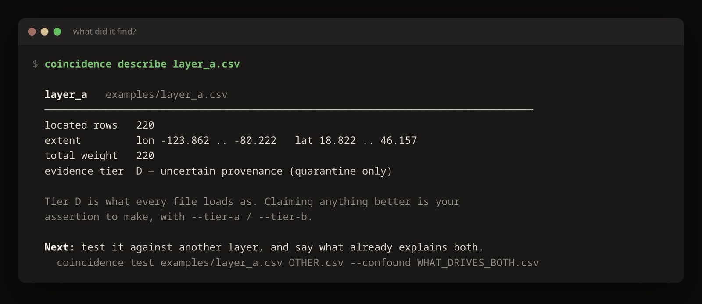
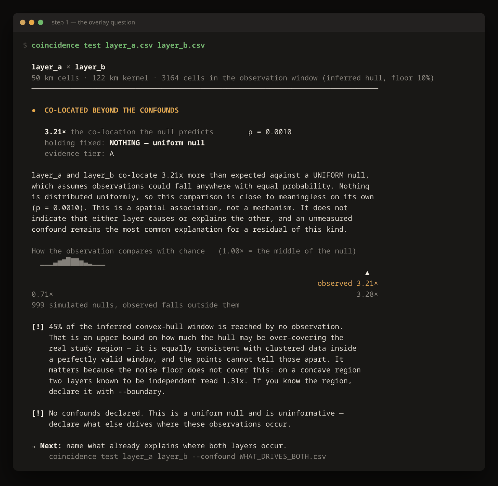
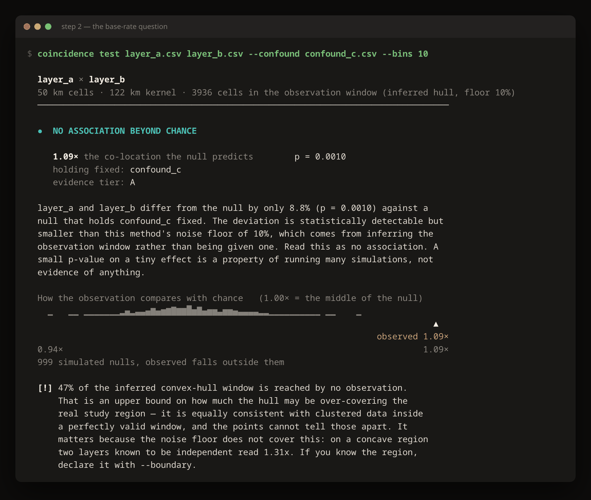
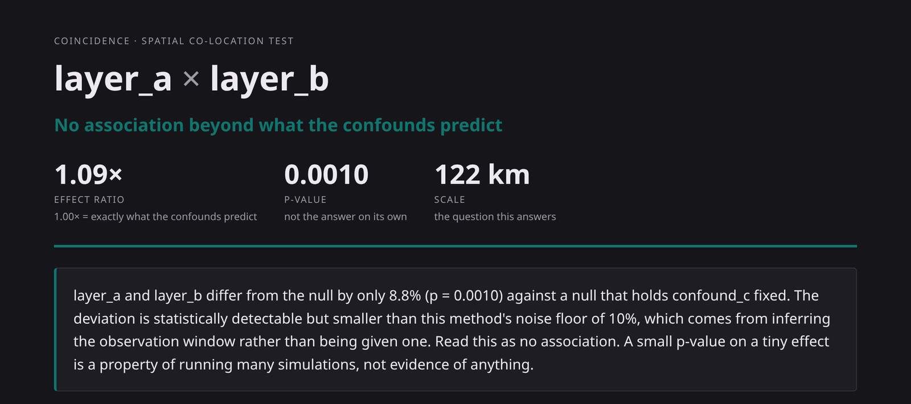
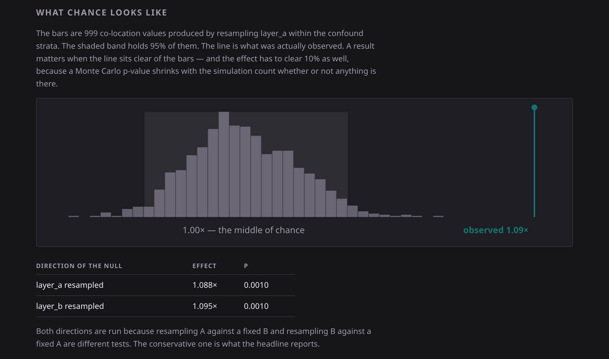
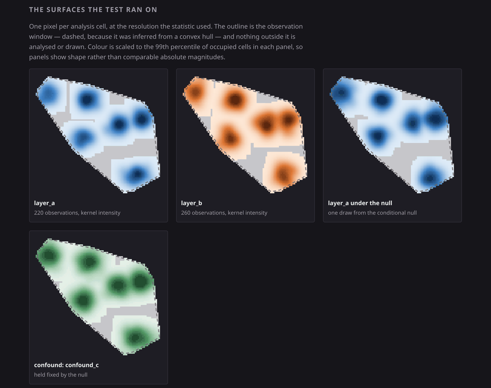
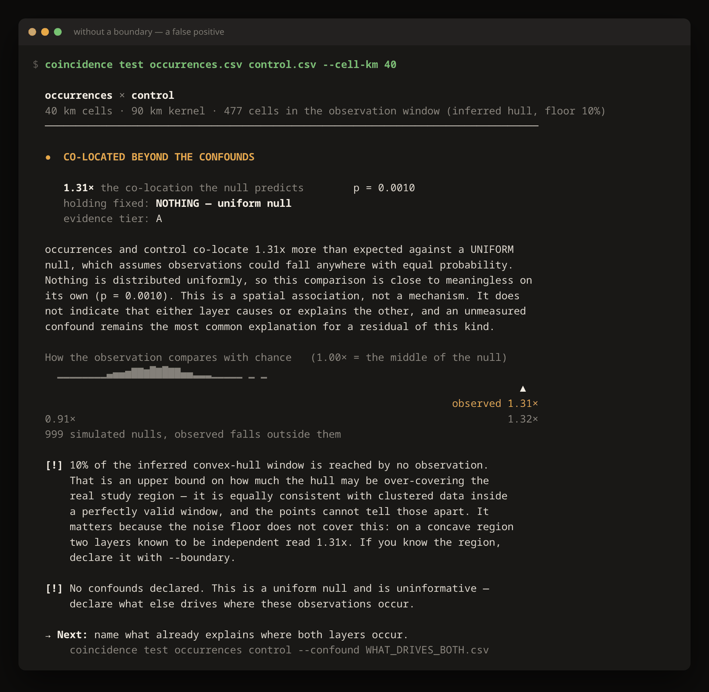
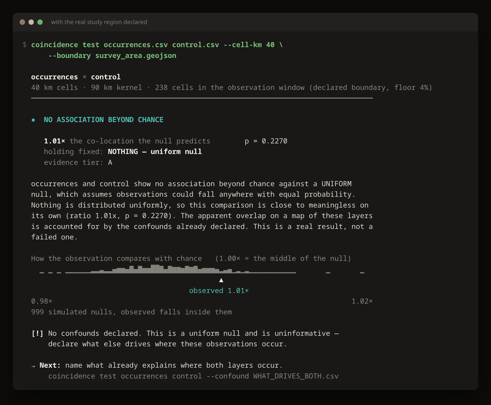
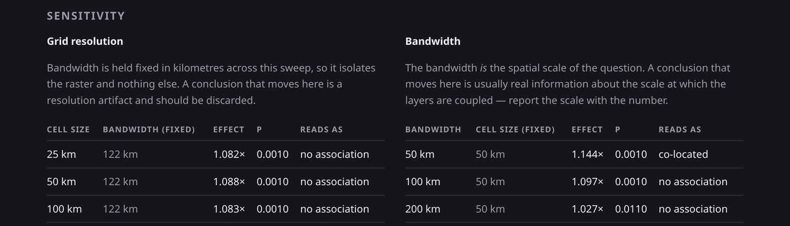

coincidence · tutorial
Does the overlap mean anything?
Ten minutes, no installation, no dependencies. By the end you will have
taken a striking spatial coincidence apart and found out whether anything was left.
1See the problem
Nothing to install. Python 3.9 or newer, standard library only.
git clone https://github.com/9x25dillon/coincidense_app.git
cd coincidense_app
python3 -m coincidence demo

The whole argument in one command, on data whose true answer we know.
Three synthetic layers. A and B both cluster where C is, and are otherwise drawn
independently of each other — so the true relationship between A and B is none.
Ask the naive question and they co-locate 3.15× more than scattered
points would, at p = 0.0033. Name the thing that drives both, and it falls to
1.09×.
The overlap was real. The first number was not wrong about it. What it could not tell
you is that every bit of it was C.
2Look at your data
Any located dataset: CSV, TSV, JSON, JSON Lines, or GeoJSON. Coordinate columns are
detected automatically.
python3 -m coincidence describe examples/layer_a.csv

If the columns cannot be identified, the error prints every column with a
sample value from the first row, and suggests only the ones that parse as numbers.
Note the tier. Every file loads as D — uncertain provenance, and stays
there until you assert otherwise with --tier-a / --tier-b.
Claiming your data is authoritative is your assertion to make, not something a filename
earns. Rows without usable coordinates are dropped and counted, never imputed.
3Ask the overlay question
This is the question a map answers, and the reason overlay maps are so persuasive.
python3 -m coincidence test examples/layer_a.csv examples/layer_b.csv \
--tier-a A --tier-b A

A large, overwhelmingly significant association — against a null that
assumes observations could have landed anywhere with equal probability.
Nothing on Earth is uniformly distributed. Against that null almost
everything looks significant, which is exactly why so many overlay maps look so
convincing. The tool runs it, reports it, and tells you it is close to meaningless.
4Ask the base-rate question
Now supply the one thing that makes this a test rather than a picture: what
else explains where your observations are?
python3 -m coincidence test examples/layer_a.csv examples/layer_b.csv \
--confound examples/confound_c.csv --bins 10 --tier-a A --tier-b A

3.21× becomes 1.09×. The bar chart is the simulated null; the marker is
what was observed.
A confound is just another located dataset — points wherever the confounding thing is,
optionally weighted with --weight-c. Population by place, road
intersections, karst outcrops, survey control points. Repeat --confound for
as many as you have. The null then resamples your layer within strata defined by
those confounds, which destroys the association under test while preserving each layer's
relationship to what explains it.
Two numbers, and only one of them is the answer
The effect ratio is the answer. 1.00× means the layers are exactly as
co-located as the confounds already predict; 2.00× means twice as much; 0.50× means they
actively avoid each other, which is as real a finding as clustering.
The p-value is not the answer. Monte Carlo nulls tighten as you add
simulations, so with enough of them a 2% deviation reads as p < 0.01. A result needs an
effect of at least 10% and p < 0.05 before this tool will call it anything.
Above, 8.8% at p = 0.0010 is reported as no association — and the statement says
why.
5Read the report
python3 -m coincidence test examples/layer_a.csv examples/layer_b.csv \
--confound examples/confound_c.csv --bins 10 --tier-a A --tier-b A \
--sensitivity --report finding.html
One self-contained HTML file. No network, no assets, no build step — you can email it.

The verdict, the effect size, and the scale the answer is about. A negative
result gets the same weight and the same space as a positive one.

What chance looks like, in the same units as the headline ratio. Both
directions of the null are run — resampling A against a fixed B is a different test from
resampling B against a fixed A — and the conservative one is reported, so the answer
cannot depend on which file you typed first.

The surfaces the test actually ran on, one pixel per analysis cell.
Look at the third panel. That is one draw from the null —
layer A as chance would have arranged it, given the confound. If it is hard to tell from
the real layer A beside it, you are looking directly at why the ratio came back near 1.
You do not have to take the number's word for it.
6Polygons have size
If your layers are boundaries rather than points — counties, watersheds, geology,
land cover — each polygon is rasterized by the area it actually covers, cell by cell,
with holes subtracted. Nothing to switch on.
It matters more than it sounds. Here is one enormous western polygon and twenty-four
tiny eastern ones, with a second layer scattered entirely inside the western one, so the
truth is that they co-locate:
| polygons read as | effect | verdict |
|---|
one representative point each (--no-areal) |
0.17× | segregated — backwards |
| the area they cover (default) |
3.00× | co-located — correct |
Twenty-four small centroids outvote one large one and the tool reports the opposite of
the truth. Two readings are available, because they answer different questions:
# extent (default): bigger features count for more — karst, land cover
python3 -m coincidence test karst.geojson caves.csv --confound pop.csv
# mass: each feature counts once however far it spreads — a county's population
python3 -m coincidence test counties.geojson cases.csv \
--weight-a POP --areal-mode mass
The intersection area is computed exactly, by clipping each polygon
to each cell — not estimated by scattering sample points. A tool whose job is deciding
whether a small residual is real has no business adding sampling noise of its own to
the measurement.
7Declare your study region
This is the highest-value flag in the tool, and on some geometries it is not optional.
Absent a real boundary, the engine infers the observation window from the convex hull
of your points. For a roughly convex study area that is close enough. For a concave one it
is not close at all. Here are two layers scattered independently inside a
crescent-shaped survey area — no relationship whatsoever:

Without a boundary. 1.31×, p = 0.0010, reported as
co-located. A confident false positive.

With the region declared. 1.00×. The finding was the
hull's shape, not the data.
python3 -m coincidence test occurrences.csv control.csv \
--cell-km 40 --boundary survey_area.geojson
A GeoJSON Polygon or MultiPolygon, holes included — a watershed, a county, a park, a
survey extent, a coastline-clipped land area. Measured over eight trials on that crescent:
| observation window | mean effect | mean deviation | worst |
|---|
| inferred convex hull | 1.307× | 30.7% |
33.4% |
| declared boundary | 1.005× | 0.6% |
1.9% |
Coastlines, valley floors, river corridors, mountain arcs and anything with a lake in
it are all that shape. Declaring the region also lowers the noise floor from 10% to 4%,
because the hull over-coverage the higher floor was paying for is gone — so a 5% effect
becomes reportable.
No statistic can tell you whether you are in this case. The tool
reports how much of an inferred window no observation reaches, but that is an upper
bound on possible over-coverage, not a concavity detector: clustered points inside a
perfectly convex region score higher than a genuine crescent. Where an observation
could have occurred is knowledge about the world, not a property of your
sample. That is the whole reason the boundary has to be declared.
8Check the parameters
--sensitivity sweeps the two parameters that could otherwise decide your
result on their own, holding the other fixed each time.

Each sweep varies one thing. The column being held fixed is printed beside
it so you can confirm that.
The two sweeps mean opposite things, and this is the part most worth internalising:
- A conclusion that moves with cell size is a resolution artifact —
the modifiable areal unit problem — and should be discarded.
- A conclusion that moves with bandwidth is usually real information
about the scale at which your layers are coupled. Two layers coupled at 5 km
read 4.9× under a 25 km kernel and 1.1× under a 200 km one. Both are correct answers to
different questions, which is why a ratio quoted without its bandwidth is not
interpretable.
9Share it
python3 -m coincidence test a.csv b.csv --confound pop.csv --export finding.json
The bundle carries the inputs and their provenance, every parameter, the null
specification, the seed, and the result. Anyone with the same files re-runs it and gets
the same numbers — or swaps the confound set and shows you exactly where you went wrong.
The HTML report embeds the same bundle, so a report that arrives by email is still
re-runnable.
That is the point. A claim that comes with its null model attached is a claim someone
can argue with precisely, instead of trading screenshots.
What it will not tell you
- Anything causal. This measures spatial association. It cannot
distinguish mechanism, direction, or cause, and its output never implies it can.
- Anything about individuals. Association between areas does not
transfer to the people or objects in them.
- That you found everything. The engine can only condition on the
confounds you declare. An unmeasured confound remains the most likely explanation for
any residual association — and that is the single most common reason a spatial finding
turns out to be nothing.